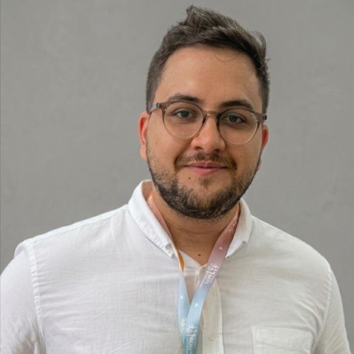
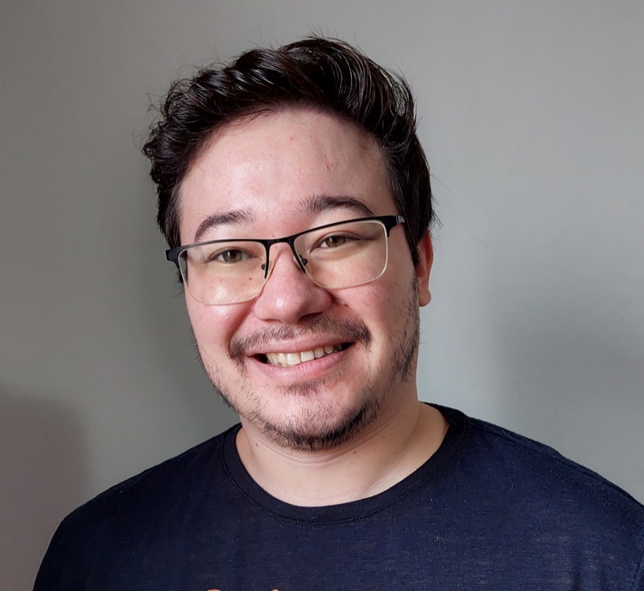
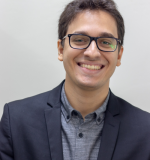
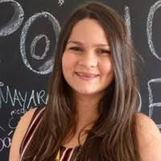
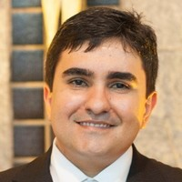
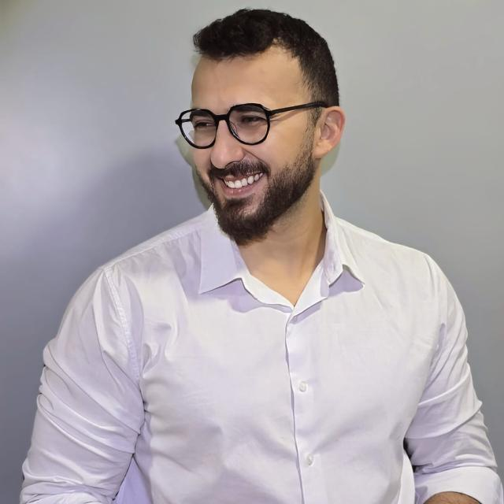
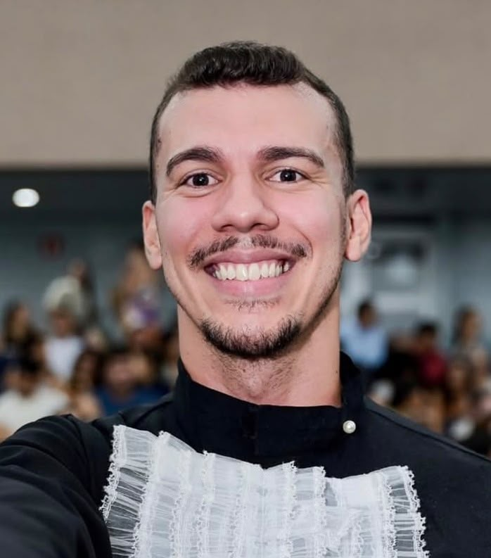
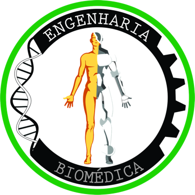
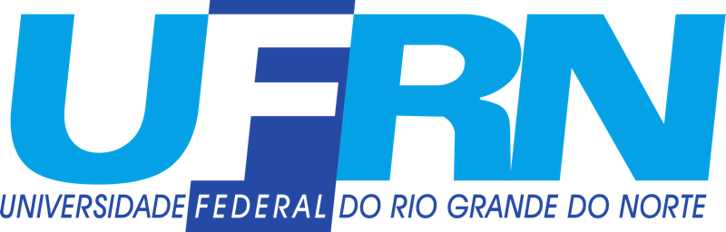

Dois dias de palestras, mesas-redondas, oficinas e mostra de projetos sobre tecnologia aplicada à saúde para estudantes de Engenharia Biomédica e de outros cursos de tecnologia.
Sobre o evento
O I Simpósio de Engenharia Biomédica da UFRN reúne estudantes, professores e profissionais para discutir pesquisa, inovação e mercado na área. A ideia é aproximar quem está na graduação do que acontece nos laboratórios, nos hospitais e na indústria.
É aberto a estudantes de Engenharia Biomédica e de outros cursos de tecnologia que se interessam pela área.
Interfaces cérebro-máquina e sinais neurais
Gestão de tecnologia hospitalar
Genômica, dados biológicos e algoritmos
Telemedicina, apps e dados em saúde
Acessibilidade, próteses e reabilitação
Programação
Programação preliminar, sujeita a alterações. Os nomes e temas serão confirmados em breve.
Palestrantes
Conheça quem já está confirmado. Novos nomes serão anunciados em breve.

Instituto Santos Dumont (ISD)
Oficina Ortopédica do ISD e a relação com a Engenharia Biomédica
Atua na Oficina Ortopédica do Instituto Santos Dumont, em Macaíba/RN, que produz órteses e próteses para os pacientes do Centro Especializado em Reabilitação (CER IV). Na palestra, apresenta como a oficina está sendo estruturada e as possibilidades de colaboração com o curso de Engenharia Biomédica da UFRN.

IIN-ELS · Instituto Santos Dumont
Neuromodulação: engenharia para estimular o cérebro
Físico médico, com mestrado e doutorado em Física Aplicada à Medicina e Biologia pela USP. É professor e pesquisador do Instituto Internacional de Neurociências Edmond e Lily Safra (IIN-ELS), que faz parte do Instituto Santos Dumont. Trabalha com neurotecnologia, em especial estimulação magnética transcraniana, neuronavegação, robótica e interfaces cérebro-máquina, e ajudou a desenvolver o software livre InVesalius Navigator. Hoje pesquisa neuromodulação, conectividade cerebral e estimulação em tempo real.

Departamento de Engenharia Biomédica · UFRN
Regulação em saúde e tecnologia: dados a serviço do SUS
Engenheiro biomédico formado pela UFRN, mestre em Ciência, Tecnologia e Inovação e doutor em Engenharia Elétrica e de Computação, também pela UFRN. É professor substituto do Departamento de Engenharia Biomédica da UFRN e pesquisador do Laboratório de Inovação Tecnológica em Saúde (LAIS/UFRN), onde trabalha com dados e tecnologia aplicados à gestão do SUS, em temas como a regulação de leitos no Rio Grande do Norte e a eficiência da rede pública de tomógrafos.
10 de dezembro, às 18h40. Profissionais da gestão pública, de hospitais, de planos de saúde e do empreendedorismo conversam sobre a atuação do engenheiro clínico.

SESAP/RN · IFRN
Engenheira clínica da Secretaria de Estado da Saúde Pública do Rio Grande do Norte (SESAP/RN) e professora substituta do IFRN no curso de Equipamentos Biomédicos.

HUOL/UFRN · Ebserh
Engenheiro clínico do Hospital Universitário Onofre Lopes (HUOL/UFRN).

SIHA
Engenheiro clínico e fundador da SIHA, empresa que presta serviços de engenharia clínica.

Unimed Natal
Engenheiro clínico da Unimed Natal.
Inscrição
As inscrições são gratuitas e feitas pelo SIGAA da UFRN. Quem se inscreve e tem a presença registrada recebe certificado de participação.
As instruções detalhadas e o período de inscrição serão divulgados em breve.
Local
Complexo Tecnológico de Engenharia (CTEC) · Campus Central · Natal/RN
Parceiros


Empresas, laboratórios e instituições podem apoiar com patrocínio, coffee break, brindes ou estrutura para a mostra de projetos. Sua marca aparece no site e na divulgação do evento.
Dúvidas
Não. O evento é voltado principalmente para estudantes de Engenharia Biomédica, mas estudantes de outros cursos de tecnologia também podem participar.
Não, a participação é gratuita. A inscrição é feita pelo SIGAA.
Sim. O certificado é emitido para quem tiver a presença registrada durante o evento.
Sim. As oficinas acontecem em laboratório de informática e as vagas dependem da capacidade da sala. Como se inscrever nelas será divulgado junto com a programação final.